sara.cueva.rodriguez@hotmail.com
(+34)615 348 127
Own car
I'm one of the first components of the beginning as a brand of MC Virtuti S.L., of which I have been part of for 10 years and for which I still do freelance work, both in jewelry and goldsmith.
Using ZBrush, Rhinoceros 3D, V-Ray, KeyShot(for renderings) and Netfabb, among others, for the 3D modelings and its subsequent preparation for manufacturing.
For the photographic editing of the products I use Lightroom. I have also been in charge of the Newsletters, managing the profiles on social networks and actively participating in the creation of the website and corporate image of the company. I also use Office tools, such as Excel to keep track of orders; Adobe Illustrator to make Photogravure plates; in addition to the use of Photoshop as a product design tool.
I consider myself a perfectionist person, who likes teamwork.
My level of English is high, both spoken and written; and medium level of spoken Japanese.
I'm always seeking ways for my growing and training in the field of 3D modeling and design. In addition, I have done a master's degree in web design and programming at the CICE Professional School of New Technologies, in which I have also taken ZBrush and Cinema 4D courses.
Experience
MC Virtuti S.L.
Guadalajara, España (2009-2020)
Designer, Photographer and 3D Modelist
o In charge of the 3D modeling and photography sections.
o In charge of the Newsletters.
o Administration of profiles in social networks and actively participating in the creation of the website and corporate image of the company.
o Product design and manufacturing.

 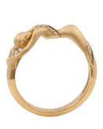
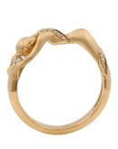
Torrejon de Ardoz Municipal Funeral Parlor
Madrid, España (Agosto de 2016)
Tanatoesthetics Technician - Internship
Jesus Yanes
Madrid, España (2019)
3D Modelist
o Focused on creating the different pieces of all the collections to create their 3D renderings and use them on the website as product images.
Studies
Art school
Guadalajara, España (2010)
12º Grado / Diploma High School
Codis
Madrid, España (410horas lectivas, 2016)
Tanatoesthetics Technician
Cice
Intensive Cinema 4D Course
Madrid, España (2019)
o Create 3D objects.
o Materials.
o Illumination.
o Objects and cameras animation.
Intensive Organic Modeling Course on Zbrush
Madrid, España (2019)
o ZSpheres.
o Modeling with primitives and Dynamesh.
o Retopology.
o Alphas and Brushes.
o Hardsurfaces.
o Organic Modeling.
o UV Maps.
Master in Website Design and Development (Adobe Official)
Madrid, España (2019-2020)
o Web design in Adobe XD
o HTML5
o CSS
o Project Upload to GitHub
o SCSS
o JavaScript
o PHP
o Publication of the website
Competencies
ZBrush
Adobe
Netfabb & Magics
Rhinoceros
Web Design & Programming
Spine
Other programs
+ Aptitudes
Languages
ZBrush - 3D Modeling
Some examples of 3D modelings, original and FanArts, modeled and rendered by me.
 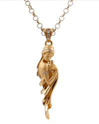
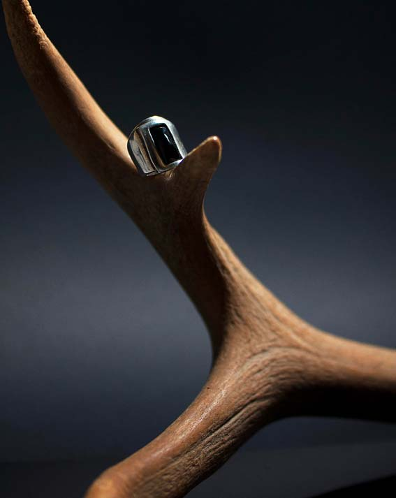
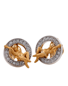
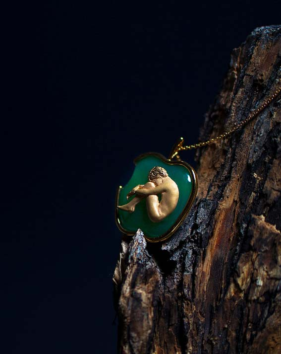
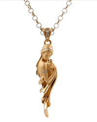
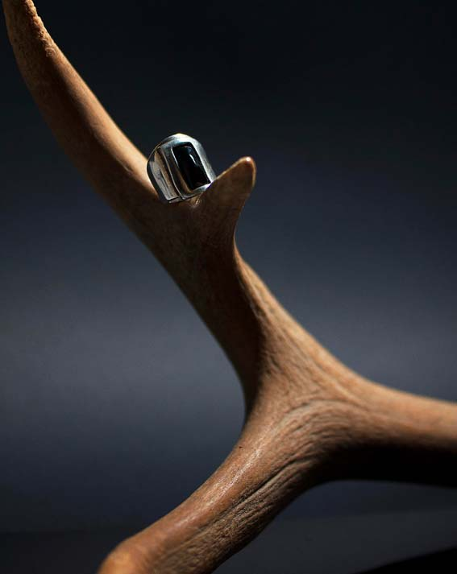
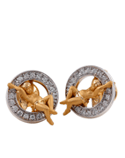
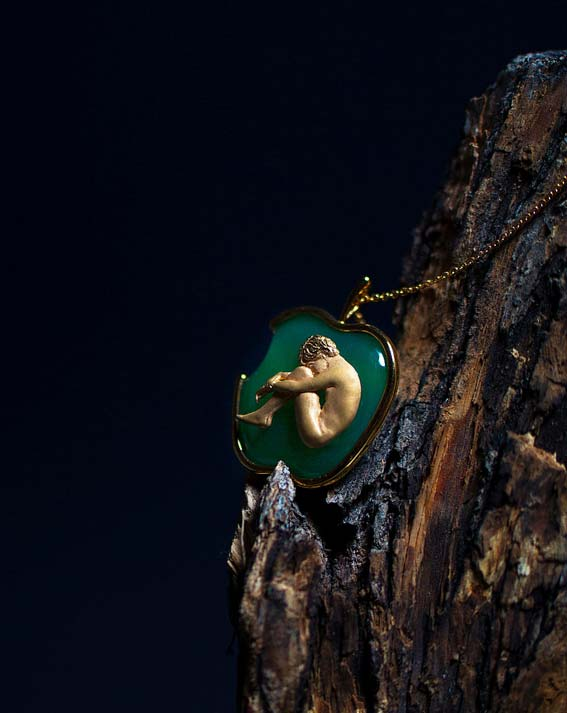
Projects
Designer and 3D modelist of the following trophies:
o 12th annual ‘Golden Eagle’ film ceremony in 2014, held at ‘Mosfilm Movie’, Moscow.
o 13th annual 'Golden Eagle' film ceremony of 2015, which took place at 'Mosfilm Movie', Moscow.
o 37th ‘Moscow International Film Festival’ 2015.
o ‘I Believe. Konstantin Stanislavski Award ', a special award given since of 2001 at the' Moscow International Film Festival ' for exceptional achievements in acting career and for devotion to the principles of the Stanislavski school (' For conquering the summit performance and fidelity 'as traditionally formulated).
 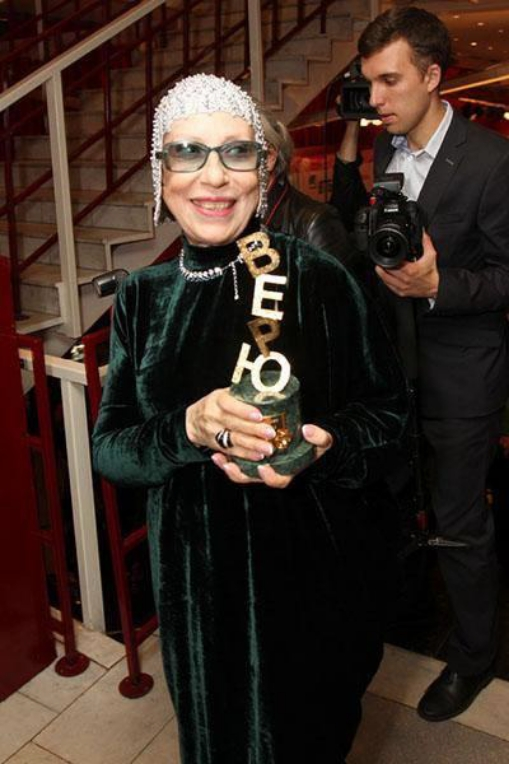
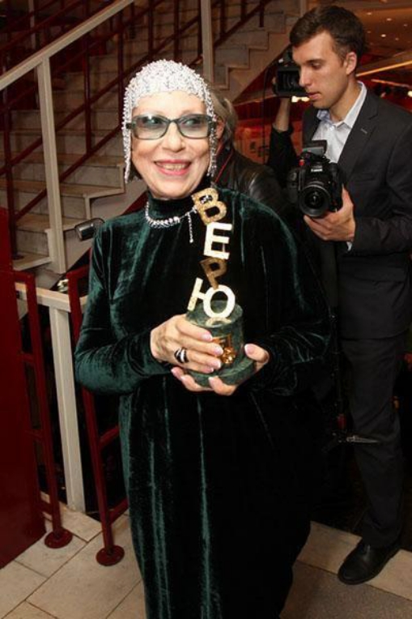
Designer and 3D modelist of a sculpture with a clock for the ‘Charity Auction on the British Polo Day’ in the 2014 summer to help people with mental disabilities.
 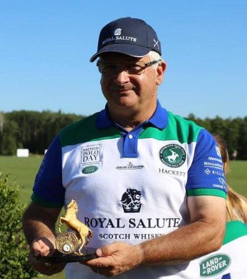
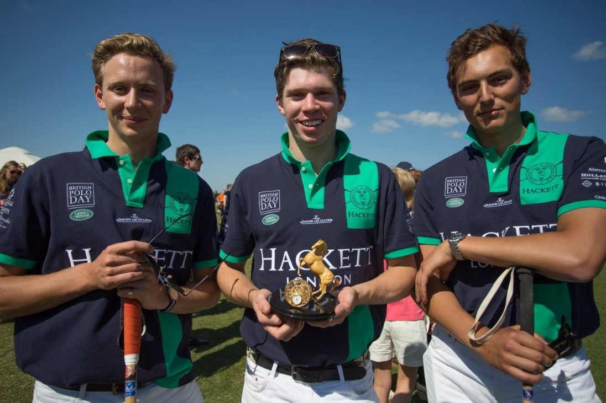
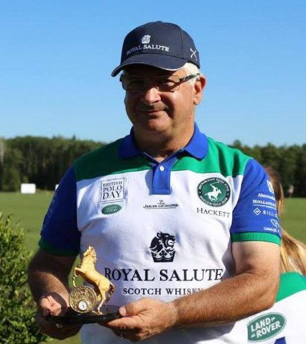
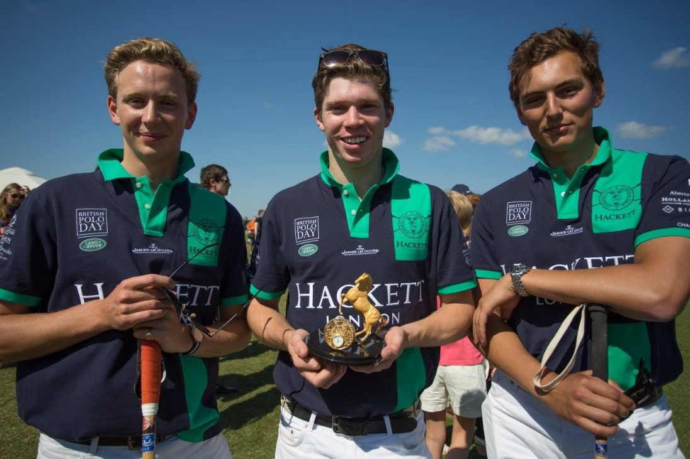